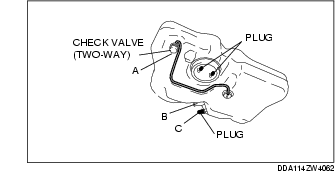

Fuel tank inspection [ZY]
- • The rollover valves built into the fuel tank and check valves (two-way) press into the evaporative hose are inspected in this inspection.
1. Follow "BEFORE SERVICE PRECAUTION" before performing any work operations to prevent fuel from spilling from the fuel system. (See BEFORE SERVICE PRECAUTION [ZY].)
2. Disconnect the negative battery cable.
3. Remove the fuel tank assembly. (See FUEL TANK REMOVAL/INSTALLATION [ZY].)
4. Remove the charcoal canister. (See CHARCOAL CANISTER REMOVAL/INSTALLATION [ZY].)
5. Perform the following procedure to verify the fuel tank airtightness.
-
(1) Plug the fuel pump unit pipe, ports B and C.

- (2) Apply a pressure of 5.9 kPa {44 mmHg, 1.7 inHg} to port A and wait for a while.
- (3) Verify that there is no air leakage from the fuel tank.
6. Plug the fuel pump unit pipe and port C.

7. Level the fuel tank.
8. Apply a pressure of 5.9 kPa {44 mmHg, 1.7 inHg} to port A and wait for a while.
9. With the pressure still applied, verify that there is airflow from port B and the pressure is 0- 5.9 kPa {0-44 mmHg, 0- 1.7 inHg}.
10. Apply a pressure of -2.0 kPa {-15 mmHg, -0.6 inHg} to port A and wait for a while.
11. With the pressure still applied, verify that there is airflow from port C and the pressure is -2.0- 0 kPa {-15- 0 mmHg, -0.6- 0 inHg}.
- • If there is no airflow, replace the fuel tank.
- • If there is airflow, place the fuel tank upside down.
12. Apply a pressure of 5.9 kPa {44 mmHg, 1.7 inHg} to port A and wait for a while.

13. With the pressure still applied, verify that there is no airflow from port B.